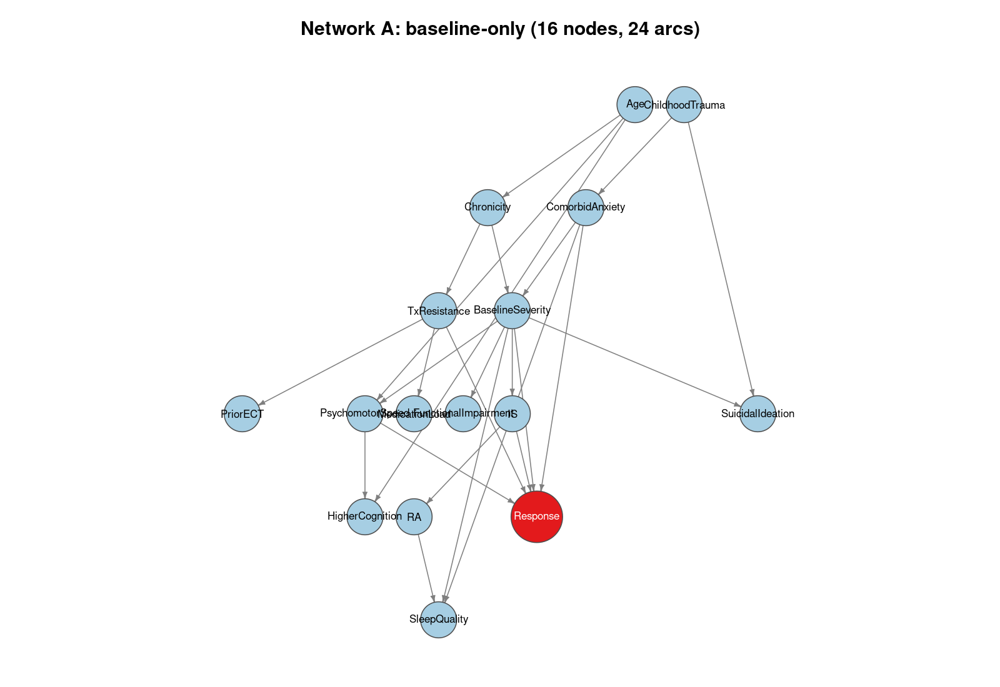
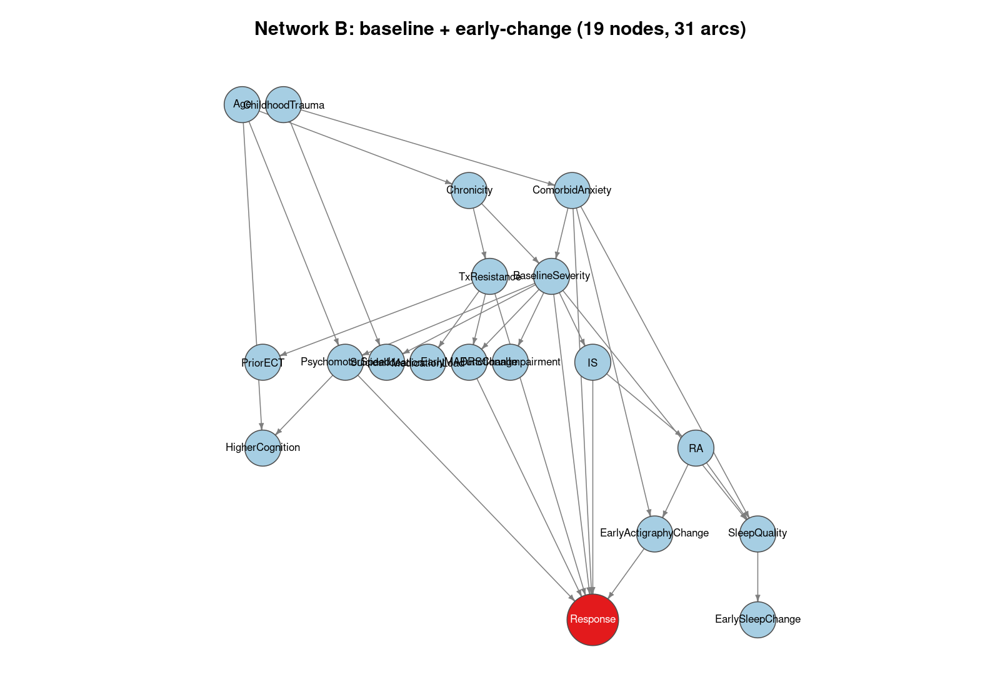
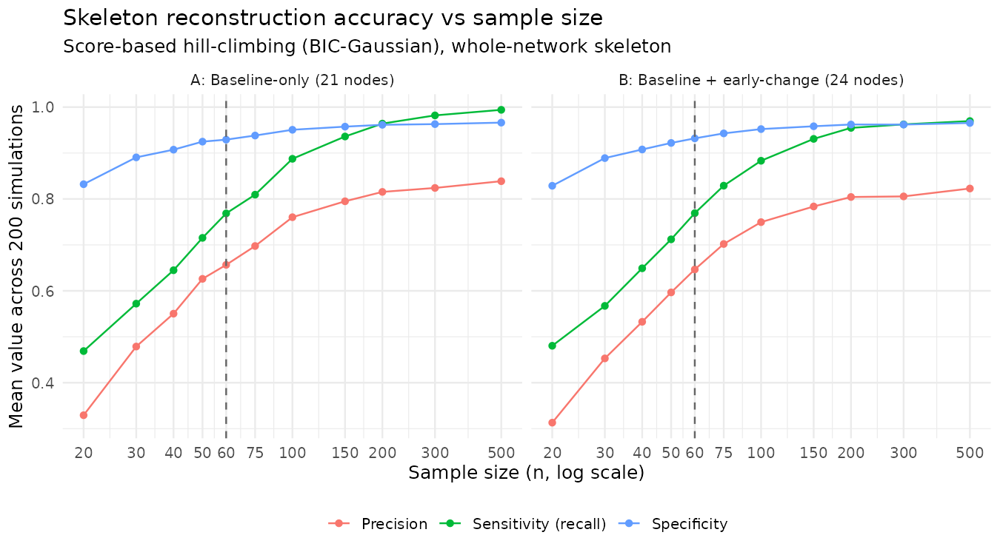
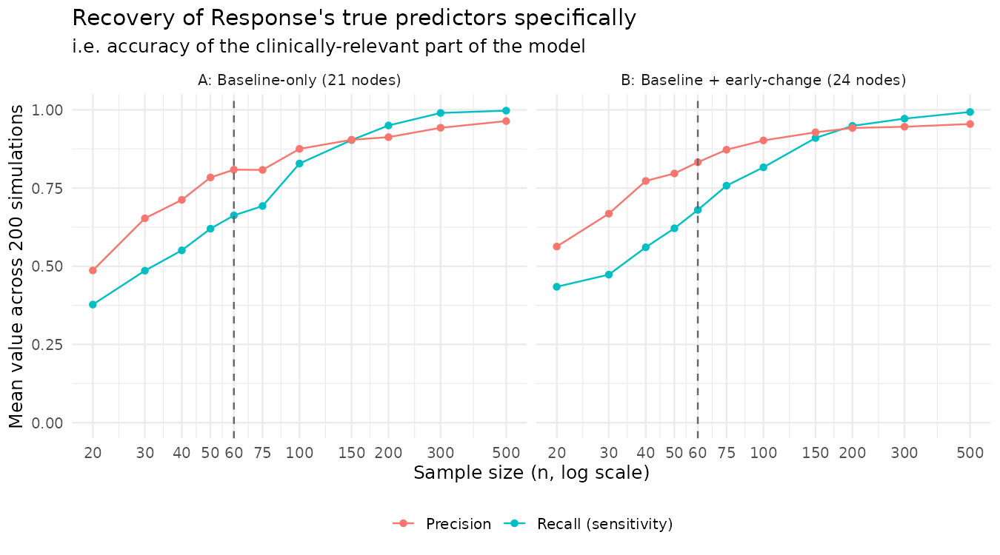
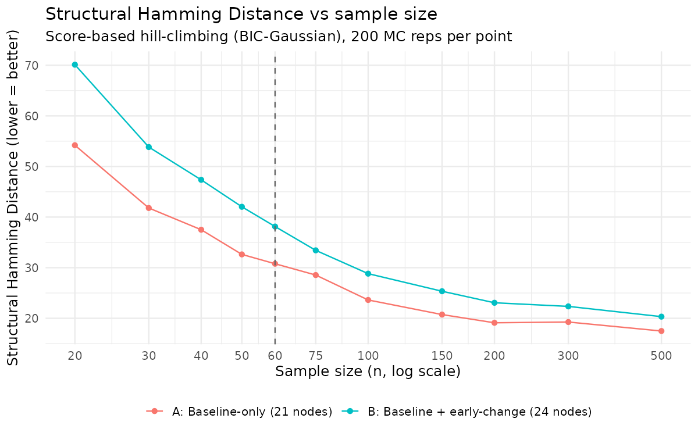
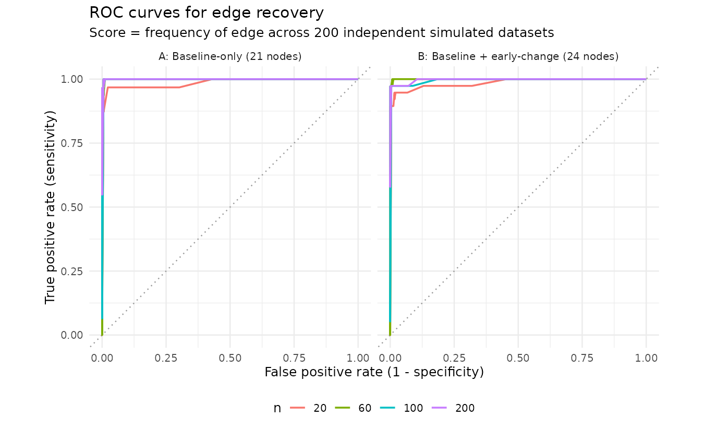
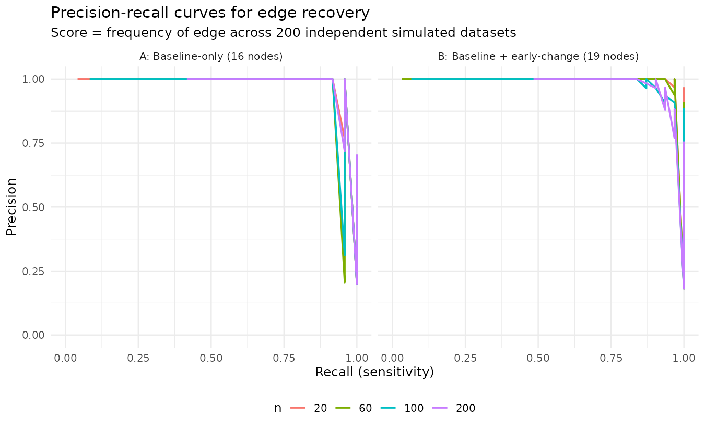

A simulation-based power analysis for Bayesian network structure learning
Author
Matthieu Vignes (w. N. Monk, G. Murray, R. Porter and W. Simcock)
Published
20 Jul 2026
Motivation
We want to build a predictive model for (e.g. Ketamine) treatment response using a Bayesian network. Our measurements include a handful of clinical variables, some neuropsychological test scores, a few actigraphy-derived circadian-rhythm metrics, and an outcome. We hypothetise 15 (20 in another version of these simulations) candidate causal predictors, and our planned sample size is \(n = 60\), set mostly because of feasibility: recruitment window and budget, not because of a formal power analysis.
The present simulation scheme acts as en empirical evaluation to answer the following question: How good is n = 60 to learn a useful network with 20 variables?.
Traditional power analysis cannot be applied here, as there is no single effect size or test statistic to power for. The “result” is an entire graph structure and the quality of the prediction on an outcome.
We first define a plausible ground-truth network. Then, we generate synthetic data from it at different sample sizes. In a third step, we run an intended structure-learning algorithm on each simulated dataset. Last, we measure how well it recovers the truth.
This tutorial walks through these steps, using bnlearn, for two versions of the network (predictors measured at baseline only, vs. baseline + a few early within-treatment change variables), across sample sizes from 20 to 500.
Everything below is illustrative. The network structure and effect sizes are a reasonable placeholder built from a real 20-variable candidate list, not fitted to real pilot data. The code is written so any user can drop in their own DAG and effect sizes and get their own performance numbers out. The network reconstruction algorithm module can also be replaced with a different methods. See the Adapting this for your own project section at the end.
Step 1 - Define two candidate “true” networks
We compare two scenarios:
Network A (16 nodes): contains 15 baseline predictors from demographics/illness course, to comorbidity/history, to treatment history, to suicidality/functioning, to neuropsychological domain scores, to actigraphy rest-activity-rhythm (RAR) parameters, plus a continuous Response outcome node.
Network B (19 nodes) consists in Network A plus 3 early within-treatment “change” variables (EarlyMADRSChange, EarlyActigraphyChange, EarlySleepChange), testing whether adding longitudinal predictors helps or hurts structure recovery at a fixed sample size.
Note
The original candidate list had 20 baseline predictors (available in a different tutorial, which uses R/01_define_networks.R instead of R/01_define_networks(smaller).R). Trimmed to 15 here by collapsing correlated items into composites rather than dropping them outright: 4 neuropsychological domain scores became 2 (PsychomotorSpeed kept standalone, as it has the most ketamine-specific evidence in the cited literature, while executive function, learning/memory, and attention/ working memory were merged into a single HigherCognition composite), and 3 actigraphy sleep metrics became 1 (SleepQuality). One weak predictor, FamilyHistory, was dropped outright rather than merged.
Show code
suppressPackageStartupMessages(library(bnlearn))set.seed(2026)## ------------------------------------------------------------------## NETWORK A: baseline-only predictors (15 predictors + Response = 16 nodes)#### Reduced from an original 20-variable candidate list by:## - collapsing 4 neuropsych domain scores down to 2: PsychomotorSpeed is## kept as its own node (specific ketamine-response evidence in the## cited literature), while ExecutiveFunction/LearningMemory/AttentionWM## are merged into a single HigherCognition composite## - collapsing 3 actigraphy sleep metrics (SleepEfficiency,## SleepOnsetLatency, TotalSleepTime) into a single SleepQuality## composite## - dropping FamilyHistory (weakest/most removable predictor)## This keeps the domains that have the most direct ketamine-specific## evidence as standalone nodes, and folds generic/correlated predictors## into composites rather than discarding them outright.## ------------------------------------------------------------------modelstringA <-paste0("[Age]","[ChildhoodTrauma]","[Chronicity|Age]","[ComorbidAnxiety|ChildhoodTrauma]","[TxResistance|Chronicity]","[PriorECT|TxResistance]","[MedicationLoad|TxResistance]","[BaselineSeverity|Chronicity:ComorbidAnxiety]","[SuicidalIdeation|BaselineSeverity:ChildhoodTrauma]","[FunctionalImpairment|BaselineSeverity]","[PsychomotorSpeed|Age:BaselineSeverity]","[HigherCognition|Age:PsychomotorSpeed]","[IS|BaselineSeverity]","[RA|IS]","[SleepQuality|BaselineSeverity:RA:ComorbidAnxiety]","[Response|TxResistance:BaselineSeverity:PsychomotorSpeed:IS:ComorbidAnxiety]")dagA <-model2network(modelstringA)cat("Network A -- nodes:", length(nodes(dagA)), " arcs:", nrow(arcs(dagA)), "\n")
Network A -- nodes: 16 arcs: 24
Show code
## ------------------------------------------------------------------## NETWORK B: baseline predictors + 3 early within-treatment "time"## variables (early MADRS change, early actigraphy change, early sleep## change), which in turn feed Response alongside baseline predictors.## 15 + 3 = 18, + Response = 19 nodes.## ------------------------------------------------------------------modelstringB <-paste0("[Age]","[ChildhoodTrauma]","[Chronicity|Age]","[ComorbidAnxiety|ChildhoodTrauma]","[TxResistance|Chronicity]","[PriorECT|TxResistance]","[MedicationLoad|TxResistance]","[BaselineSeverity|Chronicity:ComorbidAnxiety]","[SuicidalIdeation|BaselineSeverity:ChildhoodTrauma]","[FunctionalImpairment|BaselineSeverity]","[PsychomotorSpeed|Age:BaselineSeverity]","[HigherCognition|Age:PsychomotorSpeed]","[IS|BaselineSeverity]","[RA|IS]","[SleepQuality|BaselineSeverity:RA:ComorbidAnxiety]","[EarlyMADRSChange|BaselineSeverity:TxResistance]","[EarlyActigraphyChange|RA:ComorbidAnxiety]","[EarlySleepChange|SleepQuality]","[Response|TxResistance:BaselineSeverity:PsychomotorSpeed:IS:ComorbidAnxiety:EarlyMADRSChange:EarlyActigraphyChange]")dagB <-model2network(modelstringB)cat("Network B -- nodes:", length(nodes(dagB)), " arcs:", nrow(arcs(dagB)), "\n")
Network B -- nodes: 19 arcs: 31
Show code
saveRDS(list(dagA = dagA, dagB = dagB), "data/true_dags.rds")## ------------------------------------------------------------------## Visualise the two true DAGs (layered/Sugiyama layout so edge## direction reads top-to-bottom; Response highlighted in red as the## outcome node).## ------------------------------------------------------------------suppressPackageStartupMessages(library(igraph))plot_bn <-function(dag, title, file, highlight ="Response") { el <-arcs(dag) g <-graph_from_edgelist(el, directed =TRUE) missing_nodes <-setdiff(nodes(dag), V(g)$name)if (length(missing_nodes) >0) g <-add_vertices(g, length(missing_nodes), name = missing_nodes) lay <-layout_with_sugiyama(g, hgap =1, vgap =1.4)$layout vcol <-ifelse(V(g)$name == highlight, "#e31a1c", "#a6cee3") vsize <-ifelse(V(g)$name == highlight, 20, 14) lab_col <-ifelse(V(g)$name == highlight, "white", "black")png(file, width =1600, height =1100, res =150)par(mar =c(1, 1, 3, 1))plot(g, layout = lay, vertex.size = vsize, vertex.color = vcol,vertex.label.color = lab_col, vertex.label.cex =0.68,vertex.label.family ="sans", edge.arrow.size =0.35,edge.color ="grey50", vertex.frame.color ="grey30",main = title)dev.off()}plot_bn(dagA, sprintf("Network A: baseline-only (%d nodes, %d arcs)",length(nodes(dagA)), nrow(arcs(dagA))),"figures/networkA_diagram.png")
Both are directed acyclic graphs (DAGs) built with bnlearn::model2network(). Here’s what they look like. Response, the node we actually care about predicting, is highlighted:

Network A: baseline-only

Network B: baseline + early-change
Step 2 - Attach effect sizes
Each arc gets a linear-Gaussian standardised coefficient |β| ~ 0.30–0.55, which are moderate effect sizes comparable to the small–moderate correlations reported in the depression-prediction literature). This turns the DAG into a fully specified generative model we can simulate from.
Show code
suppressPackageStartupMessages(library(bnlearn))set.seed(2026)dags <-readRDS("data/true_dags.rds")## Assign each arc a "true" standardised path coefficient. Coefficients are## drawn once (fixed seed) from +/-[0.30, 0.55]: moderate, realistic effect## sizes for clinical/cognitive/actigraphy predictors (comparable to the## small-moderate correlations reported in refs 10-15 of the EOI), not the## unrealistically strong signals (e.g. |beta| > 0.8) that make structure## learning artificially easy.assign_coefs <-function(dag, sd_root =1, sd_child =1, seed =1) {set.seed(seed) node_names <-nodes(dag) dist <-vector("list", length(node_names))names(dist) <- node_namesfor (nd in node_names) { pars <-parents(dag, nd)if (length(pars) ==0) { dist[[nd]] <-list(coef =c("(Intercept)"=0), sd = sd_root) } else { betas <-runif(length(pars), 0.30, 0.55) *sample(c(-1, 1), length(pars), replace =TRUE)names(betas) <- pars coefs <-c("(Intercept)"=0, betas) dist[[nd]] <-list(coef = coefs, sd = sd_child) } } dist}distA <-assign_coefs(dags$dagA, seed =2024)distB <-assign_coefs(dags$dagB, seed =2025)fittedA <-custom.fit(dags$dagA, dist = distA)fittedB <-custom.fit(dags$dagB, dist = distB)## Sanity check: simulate a large sample and look at R^2 for the Response## node under each network, so the "signal" being asked of the learning## algorithm is inspectable and plausible (not near-zero, not near-perfect).chk <-function(fitted, label) { d <-rbn(fitted, n =20000) parents_resp <-parents(fitted, "Response") fmla <-as.formula(paste("Response ~", paste(parents_resp, collapse =" + "))) r2 <-summary(lm(fmla, data = d))$r.squaredcat(sprintf("[%s] Response ~ %s ; R^2 = %.3f\n", label, paste(parents_resp, collapse=", "), r2))}chk(fittedA, "Network A")
The printed \(R^2\) values are a sanity check on the signal we’re asking the learning algorithm to recover: moderate-to-strong (\(R^2 \, \approx \,\) 0.35 - 0.75) for the Response node, not unrealistically easy and not hopeless.
Step 3 - Evaluation metrics
A learnt network is compared to the true DAG at the level of the skeleton (undirected edges), not directed arcs, because many DAGs are Markov-equivalent (share the same CPDAG), penalising a correctly-recovered-but-reversed edge as a complete miss would understate real performance. We report:
Precision, sensitivity (recall), specificity, F1 on the skeleton
Structural Hamming Distance (SHD), via bnlearn::shd()
Response-specific precision/recall — i.e. how well the model recovers only the true predictors of Response, arguably one of the numbers that matters the most for a deployable clinical prediction model
Show code
suppressPackageStartupMessages(library(bnlearn))## Undirected skeleton (set of unordered node pairs with an edge) of a bn.skeleton_pairs <-function(bn_obj) { a <-arcs(bn_obj)if (nrow(a) ==0) return(character(0)) pairs <-apply(a, 1, function(r) paste(sort(r), collapse ="--"))unique(pairs)}all_possible_pairs <-function(node_names) { cmb <-combn(sort(node_names), 2)apply(cmb, 2, function(r) paste(r, collapse ="--"))}## Data frame of every possible undirected node pair for a DAG's node set,## with a true_label (1 = arc exists between them in the true DAG, 0 = not).## Used as the labelled "universe" for ROC / precision-recall curves, where## the score per pair is how often that edge was learned across repeated## simulated datasets (see 04_run_simulation.R's edge-frequency output).skeleton_universe <-function(true_dag) { node_names <-nodes(true_dag) cmb <-combn(sort(node_names), 2) pair <-apply(cmb, 2, function(r) paste(r, collapse ="--")) node1 <- cmb[1, ] node2 <- cmb[2, ] true_edges <-skeleton_pairs(true_dag)data.frame(node1 = node1, node2 = node2, pair = pair,true_label =as.integer(pair %in% true_edges),stringsAsFactors =FALSE)}## Skeleton-level precision / recall / specificity / F1, plus SHD (on CPDAGs,## via bnlearn::shd) and a targeted metric for recovery of the edges## touching Response -- i.e. its parent set, since Response is a sink node## (no children) in both networks here. Note this is NOT the general## definition of a Markov blanket (parents + children + spouses/co-parents## of children) -- it only coincides with it because Response has no## children. If Response ever gains a child (e.g. a downstream outcome),## this metric would need to include that child's other parents too.evaluate_reconstruction <-function(true_dag, learned_dag) { nodes_all <-nodes(true_dag) universe <-all_possible_pairs(nodes_all) true_edges <-skeleton_pairs(true_dag) learned_edges <-skeleton_pairs(learned_dag) tp <-length(intersect(true_edges, learned_edges)) fp <-length(setdiff(learned_edges, true_edges)) fn <-length(setdiff(true_edges, learned_edges)) tn <-length(universe) - tp - fp - fn precision <-if ((tp + fp) >0) tp / (tp + fp) elseNA sensitivity <-if ((tp + fn) >0) tp / (tp + fn) elseNA specificity <-if ((tn + fp) >0) tn / (tn + fp) elseNA f1 <-if (!is.na(precision) &&!is.na(sensitivity) && (precision + sensitivity) >0) {2* precision * sensitivity / (precision + sensitivity) } elseNA shd_val <-shd(learned_dag, true_dag)## Response-specific recovery: edges (undirected) touching "Response" resp_true <- true_edges[grepl("(^|--)Response(--|$)", true_edges)] resp_learned <- learned_edges[grepl("(^|--)Response(--|$)", learned_edges)] resp_universe <- universe[grepl("(^|--)Response(--|$)", universe)] r_tp <-length(intersect(resp_true, resp_learned)) r_fp <-length(setdiff(resp_learned, resp_true)) r_fn <-length(setdiff(resp_true, resp_learned)) r_precision <-if ((r_tp + r_fp) >0) r_tp / (r_tp + r_fp) elseNA r_recall <-if ((r_tp + r_fn) >0) r_tp / (r_tp + r_fn) elseNAdata.frame(tp = tp, fp = fp, fn = fn, tn = tn,precision = precision, sensitivity = sensitivity,specificity = specificity, f1 = f1, shd = shd_val,response_precision = r_precision, response_recall = r_recall,response_true_edges =length(resp_true) )}
Step 4 - Monte Carlo simulation across sample sizes
For both networks, at n = 20, 30, 40, 50, 60, 75, 100, 150, 200, 300, 500, we simulate 200 independent datasets, learn structure via score-based hill-climbing (hc(..., score = "bic-g")), with 10 random restats, and evaluate against the truth. We also record, at n = 20/60/100/200, how often each possible edge was learned across the 200 Monte Carlo replicates. This gives us a natural continuous “score” per edge, we will used later for ROC/precision-recall curves.
Show code
suppressPackageStartupMessages({library(bnlearn)library(parallel)})source("R/03_metrics.R")dags <-readRDS("data/true_dags.rds")fitted <-readRDS("data/fitted_true_bns.rds")n_grid <-c(20, 30, 40, 50, 60, 75, 100, 150, 200, 300, 500)n_reps <-200# Monte Carlo repeats per (network, n) celln_cores <-max(1, detectCores() -1)## hc() is a greedy local search and can get stuck in local optima, particularly around "hub" variables with several downstream dependents, where a spurious direct edge captures a real-but-indirect relationship almost as well as the true path. This gets *more* likely, not less, as n grows and that correlation becomes statistically sharper (verified: at n=500, specific false edges recur in up to ~80% of replicates). Random restarts (re-running hill-climbing from randomly perturbed starting points and keeping the best-scoring result) mitigate this at the cost of ~(1 + HC_RESTART)x runtime per hc() call.HC_RESTART <-10HC_PERTURB <-5networks <-list(A_baseline_only =list(dag = dags$dagA, fitted = fitted$fittedA),B_with_time =list(dag = dags$dagB, fitted = fitted$fittedB))run_cell <-function(net_label, net, n, rep_id) {set.seed(net_label |> utils::URLencode() |>nchar() |> (\(x) x *100000+ n *1000+ rep_id)()) d <-rbn(net$fitted, n = n) learned <-tryCatch(hc(d, score ="bic-g", restart = HC_RESTART, perturb = HC_PERTURB),error =function(e) NULL)if (is.null(learned)) return(NULL) res <-evaluate_reconstruction(net$dag, learned) res$network <- net_label res$n <- n res$rep <- rep_id res}jobs <-expand.grid(net_label =names(networks),n = n_grid,rep_id =seq_len(n_reps),stringsAsFactors =FALSE)cat(sprintf("Total simulation cells to run: %d (networks x n-values x reps)\n", nrow(jobs)))
Total simulation cells to run: 4400 (networks x n-values x reps)
## ------------------------------------------------------------------## Edge-frequency data for ROC / precision-recall curves (see## 06_summarize_and_plot.R). At a handful of focal sample sizes, record## how often EACH possible node pair was learned as an edge across the## n_reps independent simulated datasets. That per-pair frequency## (0-1) is a natural continuous "score" for whether an edge is real,## which is what a threshold-sweep ROC/PR curve needs -- a single hc()## fit only gives a present/absent decision, not a score, so this## reuses the same repeated-simulation design already run above rather## than requiring a separate bootstrap procedure.## ------------------------------------------------------------------focal_n <-c(20, 60, 100, 200)focal_n <- focal_n[focal_n %in% n_grid]compute_edge_frequencies <-function(net_label, net, n, n_reps) { universe <-skeleton_universe(net$dag) hits <-integer(nrow(universe))names(hits) <- universe$pair net_id <-match(net_label, names(networks))for (rep_id inseq_len(n_reps)) {set.seed(net_id *1000000+ n *1000+ rep_id) d <-rbn(net$fitted, n = n) learned <-tryCatch(hc(d, score ="bic-g", restart = HC_RESTART, perturb = HC_PERTURB),error =function(e) NULL)if (is.null(learned)) next present <-skeleton_pairs(learned) hits[present] <- hits[present] +1L } universe$frequency <- hits[universe$pair] / n_reps universe$network <- net_label universe$n <- n universe}cat("Computing edge frequencies for ROC/PR curves at n =", paste(focal_n, collapse =", "), "...\n")
Computing edge frequencies for ROC/PR curves at n = 20, 60, 100, 200 ...
This chunk actually runs (200 \(\times\) 11 \(\times\) 2 = 4,400 hc() fits, each with 10 random restarts). It takes about 10 \(\times\) 2–3 min the first time and is cached after that (cache: true), so subsequent renders are instant unless the code changes.
Whole-network reconstruction accuracy vs n

Figure 1
Both networks show the same performance shape: accuracy indicators climb steeply from \(n = 20\) to roughly \(n = 150\), then plateaus. Specificity is high throughout (most possible edges are, correctly, not learned as networks are “sparse”), while precision is the slowest metric to climb: false-positive edges are the main error mode at small n.
At \(n=60\), we see acceptable levels of precision (\(72\%\)) and sensitivity/recall (\(73\%\)) with a high specificity (\(93\%\)).
Note
Some performance metrics (precision, specificity) decrease slightly from n=200 to n=500. It happens because the greedy hill-climbing algorithm can get stuck in a local optimum around “hub” variables (e.g. BaselineSeverity, Chronicity, ComorbidAnxiety) that have several downstream dependents: a spurious direct edge between two of those can capture their real-but-indirect relationship almost as well as the true confounding path. This can become more attractive to the greedy search as n grows and that correlation sharpens statistically. Random restarts (restart = 10) partly resolved it, but not entirely \(\to\) room for research!
Recovery of Response’s true predictors specifically

Figure 2
This is an even more clinically relevant curve. We answer the question: “Did we correctly identify what predicts the response?”
We see a very good precision (0.81), but a recall (0.66) lower than the global recall at \(n= 60\) for the 21-node network.
Structural Hamming Distance vs n

Figure 3
This is an “edge-editing” distance from the true network. A value of \(5\) for example, means that five (\(5\)) edges need to be added, removed or reverted from the predicted network to obtain the true network. This value is to be compared to the number of edges in the true network and to that in the predicted network. Notice that bnlearn::shd() operates on the CPDAGs; some edges are directed (typically part of a v-structure or whose direction can be identified from the graph structure) and others are not.
ROC and precision–recall curves for edge recovery
A single hc() fit only gives a present/absent decision per edge, not a score — so to get a genuine ROC/PR curve we use the frequency with which each possible edge was learned across the 200 independent simulated datasets at a given n as the continuous score, then sweep a threshold over it.

Figure 4

Figure 5
Warning
The high ROC Area Under the Curve (AUC) here (0.97-0.99) could make us overconfident. That is an artefact of class imbalance, not an error. These are sparse graphs (31-38 true arcs out of 210-276 possible pairs), so specificity is easy to achieve just by not proposing edges at random, which inflates AUC.
The precision–recall curve is the more honest picture: precision drops off well before recall reaches \(1\), which is the more clinically relevant “how many of the edges I claim are real, actually are” question. Yet, the PR curves look almost “too good” at \(n=20\). A single hc() fit on our actual \(n=60\) dataset will not have near-perfect precision. We would get close to that by running many independent replicates (like the \(200\) we did) and keeping only consistently-recovered edges. We cannot do this with one real dataset of fixed size. So the plot of Figure 1 are probably the most honest performance view in this regard.
Results summary
Table 1: Mean reconstruction metrics at selected sample sizes (single hc, 200 MC reps each)
network_label
n
precision
sensitivity
specificity
f1
shd
response_precision
response_recall
1
A: Baseline-only (16 nodes)
20
0.432
0.486
0.836
0.455
34.764
0.547
0.382
5
A: Baseline-only (16 nodes)
60
0.718
0.733
0.926
0.723
22.810
0.806
0.659
7
A: Baseline-only (16 nodes)
100
0.801
0.839
0.946
0.818
19.290
0.888
0.778
9
A: Baseline-only (16 nodes)
200
0.855
0.920
0.960
0.885
15.370
0.942
0.919
11
A: Baseline-only (16 nodes)
500
0.839
0.940
0.953
0.886
14.780
0.940
0.953
12
B: Baseline + early-change (19 nodes)
20
0.403
0.503
0.832
0.445
47.675
0.678
0.573
16
B: Baseline + early-change (19 nodes)
60
0.672
0.719
0.921
0.693
31.490
0.870
0.819
18
B: Baseline + early-change (19 nodes)
100
0.728
0.816
0.931
0.768
28.310
0.907
0.913
20
B: Baseline + early-change (19 nodes)
200
0.735
0.886
0.928
0.802
27.185
0.915
0.956
22
B: Baseline + early-change (19 nodes)
500
0.689
0.939
0.904
0.794
28.805
0.891
0.999
At n = 60 (Network A, single hc): whole-network skeleton precision ≈ 0.73, sensitivity ≈ 0.72, specificity ≈ 0.93, mean SHD ≈ 22; recovery of Response’s true predictors specifically: precision ≈ 0.82, recall ≈ 0.59.
Adapting this for your own project
Replace the DAGs in R/01_define_networks(smaller).R (or R/01_define_networks.R) with your own candidate variable set and (best-guess) causal structure.
Adjust effect sizes in R/02_fit_parameters.R to match expected or pilot-data correlations if you have them.
If your outcome is genuinely binary (e.g. an exact ≥50% symptom-reduction cutoff) rather than continuous, this would need a conditional Gaussian network (score = "bic-cg" in hc() calls) with mixed node types instead of the pure Gaussian network used here. \(R^2\) metrics for the response would also need to be changed.
If you want to use a different/more tailored network reconstruction method, everything happens in R/04_run_simulation.R where we use the hc() function.
---title: "Sample-size planning for a ketamine treatment-response prediction model"subtitle: "A simulation-based power analysis for Bayesian network structure learning"author: "Matthieu Vignes (w. N. Monk, G. Murray, R. Porter and W. Simcock)"date: "20 July 2026"date-format: "D MMM YYYY"format: html: code-fold: show code-summary: "Show code"execute: cache: true warning: false---## MotivationWe want to build a **predictive model** for (e.g. Ketamine) treatment response using a Bayesian network. Our measurements include a handful of clinical variables, some neuropsychological test scores, a few actigraphy-derived circadian-rhythm metrics, and an outcome. We hypothetise 15 (20 in another version of these simulations) candidate causal predictors, and our planned sample size is $n = 60$, set mostly because of feasibility: recruitment window and budget, not because of a formal power analysis.The present simulation scheme acts as en empirical evaluation to answer the following question: *How good is n = 60 to learn a useful network with 20 variables?*.Traditional power analysis cannot be applied here, as there is no single effect size or test statistic to power for. The "result" is an entire graph structure and the quality of the prediction on an outcome. We first define a plausible ground-truth network. Then, we generate syntheticdata from it at different sample sizes. In a third step, we run an intended structure-learning algorithm on each simulated dataset. Last, we measure how well it recovers the truth.This tutorial walks through these steps, using [`bnlearn`](https://www.bnlearn.com/), for two versions of the network (predictors measured at baseline only, vs. baseline + a few early within-treatment change variables), across sample sizes from 20 to 500.**Everything below is illustrative.** The network structure and effect sizesare a reasonable placeholder built from a real 20-variable candidate list, *not* fitted to real pilot data. The code is written so any user can drop in their own DAG and effect sizes and get their own performance numbers out. The network reconstruction algorithm module can also be replaced with a different methods. See the [Adapting this for your own project](#adapting-this-for-your-own-project) section at the end.```{r}#| label: setup#| include: falsesuppressPackageStartupMessages({library(bnlearn)library(igraph)library(ggplot2)})```## Step 1 - Define two candidate "true" networksWe compare two scenarios:- **Network A (16 nodes)**: contains 15 baseline predictors from demographics/illness course, to comorbidity/history, to treatment history, to suicidality/functioning, to neuropsychological domain scores, to actigraphy rest-activity-rhythm (RAR) parameters, plus a continuous `Response` outcome node.- **Network B (19 nodes)** consists in Network A plus 3 early within-treatment "change" variables (`EarlyMADRSChange`, `EarlyActigraphyChange`, `EarlySleepChange`), testing whether adding longitudinal predictors helps or hurts structure recovery at a fixed sample size.::: {.callout-note}The original candidate list had 20 baseline predictors (available in a different tutorial, which uses `R/01_define_networks.R` instead of `R/01_define_networks(smaller).R`). Trimmed to 15 here by collapsing correlated items into composites rather than dropping them outright: 4 neuropsychological domain scores became 2 (`PsychomotorSpeed` kept standalone, as it has the most ketamine-specific evidence in the cited literature, while executive function, learning/memory, and attention/working memory were merged into a single `HigherCognition` composite), and 3 actigraphy sleep metrics became 1 (`SleepQuality`). One weak predictor, `FamilyHistory`, was dropped outright rather than merged.:::```{r}#| label: define-networks#| file: R/01_define_networks(smaller).R```Both are directed acyclic graphs (DAGs) built with `bnlearn::model2network()`.Here's what they look like. `Response`, the node we actually care aboutpredicting, is highlighted:::: {layout-ncol=2}:::## Step 2 - Attach effect sizesEach arc gets a linear-Gaussian standardised coefficient |β| ~ 0.30–0.55, which are moderate effect sizes comparable to the small–moderate correlations reported in the depression-prediction literature). This turns the DAG into a fully specified generative model we can simulate from.```{r}#| label: fit-parameters#| file: R/02_fit_parameters.R```The printed $R^2$ values are a sanity check on the signal we're asking thelearning algorithm to recover: moderate-to-strong ($R^2 \, \approx \,$ 0.35 - 0.75) for the `Response` node, not unrealistically easy and not hopeless.## Step 3 - Evaluation metricsA learnt network is compared to the true DAG at the level of the **skeleton**(undirected edges), not directed arcs, because many DAGs are Markov-equivalent(share the same CPDAG), penalising a correctly-recovered-but-reversed edge asa complete miss would understate real performance. We report:- **Precision, sensitivity (recall), specificity, F1** on the skeleton- **Structural Hamming Distance (SHD)**, via `bnlearn::shd()`- **`Response`-specific precision/recall** — i.e. how well the model recovers *only* the true predictors of `Response`, arguably one of the numbers that matters the most for a deployable clinical prediction model```{r}#| label: metrics#| file: R/03_metrics.R```## Step 4 - Monte Carlo simulation across sample sizesFor both networks, at n = 20, 30, 40, 50, 60, 75, 100, 150, 200, 300, 500, wesimulate 200 independent datasets, learn structure via score-basedhill-climbing (`hc(..., score = "bic-g")`), with 10 random restats, and evaluate against the truth.We also record, at n = 20/60/100/200, how often each possible edge waslearned across the 200 Monte Carlo replicates. This gives us a natural continuous "score" per edge, we will used later for ROC/precision-recall curves.```{r}#| label: run-simulation#| file: R/04_run_simulation.R#| cache: true```::: {.callout-note}This chunk actually runs (200 $\times$ 11 $\times$ 2 = 4,400 `hc()` fits, each with 10 random restarts). It takes about 10 $\times$ 2–3 min the first time and is cached after that (`cache: true`), so subsequent renders are instant unless the code changes.:::### Whole-network reconstruction accuracy vs n```{r}#| label: fig-plot1#| echo: falseknitr::include_graphics("figures/plot1_whole_network_accuracy.png")```Both networks show the same performance shape: accuracy indicators climb steeply from $n = 20$ to roughly $n = 150$, then plateaus. Specificity is high throughout (most possible edges are, correctly, not learned as networks are "sparse"), while precision is the slowest metric to climb: false-positive edges are the main error mode at small n.At $n=60$, we see acceptable levels of precision ($72\%$) and sensitivity/recall ($73\%$) with a high specificity ($93\%$).::: {.callout-note}Some performance metrics (precision, specificity) decrease slightly from n=200 to n=500. It happens because the greedy hill-climbing algorithm can get stuck in a local optimum around "hub" variables (e.g. `BaselineSeverity`, `Chronicity`,`ComorbidAnxiety`) that have several downstream dependents: a spuriousdirect edge between two of those can capture their real-but-indirect relationship almost as well as the true confounding path. This can become *more* attractive to the greedy search as n grows and that correlation sharpens statistically. Random restarts (`restart = 10`) partly resolved it, but not entirely $\to$ room for research!:::### Recovery of `Response`'s true predictors specifically```{r}#| label: fig-plot2#| echo: falseknitr::include_graphics("figures/plot2_response_predictors_accuracy.png")```This is an even more clinically relevant curve. We answer the question: "Did we correctly identify what predicts the response?"We see a very good precision (0.81), but a recall (0.66) lower than the global recall at $n= 60$ for the 21-node network.### Structural Hamming Distance vs n```{r}#| label: fig-plot3#| echo: falseknitr::include_graphics("figures/plot3_shd_vs_n.png")```This is an "edge-editing" distance from the true network. A value of $5$ for example, means that five ($5$) edges need to be added, removed or reverted from the predicted network to obtain the true network. This value is to be compared to the number of edges in the true network and to that in the predicted network. Notice that `bnlearn::shd()` operates on the CPDAGs; some edges are directed (typically part of a v-structure or whose direction can be identified from the graph structure) and others are not.### ROC and precision–recall curves for edge recoveryA single `hc()` fit only gives a present/absent decision per edge, not ascore — so to get a genuine ROC/PR curve we use the **frequency with whicheach possible edge was learned across the 200 independent simulateddatasets** at a given n as the continuous score, then sweep a threshold overit.```{r}#| label: fig-plot4-5#| echo: false#| layout-ncol: 2knitr::include_graphics("figures/plot4_roc_curves.png")knitr::include_graphics("figures/plot5_precision_recall_curves.png")```::: {.callout-warning}The high ROC Area Under the Curve (AUC) here (0.97-0.99) could make us overconfident. That is an artefact of class imbalance, not an error. These are sparse graphs (31-38 true arcs out of 210-276 possible pairs), so specificity is easy to achieve just by not proposing edges at random, which inflates AUC. **The precision–recall curve is the more honest picture**: precision drops off well before recall reaches $1$, which is the more clinically relevant "how many of the edges I claim are real, actually are" question. Yet, the PR curves look almost "too good" at $n=20$. A single `hc()` fit on our actual $n=60$ dataset will not have near-perfect precision. We would get close to that by running many independent replicates (like the $200$ we did) and keeping only consistently-recovered edges. We cannot do this with one real dataset of fixed size. So the plot of Figure 1 are probably the most honest performance view in this regard.:::## Results summary```{r}#| label: tbl-summary#| echo: falsesumm <-read.csv("data/table1_primary_summary.csv")knitr::kable( summ[summ$n %in%c(20, 60, 100, 200, 500), ],digits =3,caption ="Mean reconstruction metrics at selected sample sizes (single hc, 200 MC reps each)")```**At n = 60 (Network A, single hc):** whole-network skeleton precision ≈0.73, sensitivity ≈ 0.72, specificity ≈ 0.93, mean SHD ≈ 22; recovery of`Response`'s true predictors specifically: precision ≈ 0.82, recall ≈ 0.59.## Adapting this for your own project- Replace the DAGs in `R/01_define_networks(smaller).R` (or `R/01_define_networks.R`) with your own candidate variable set and (best-guess) causal structure.- Adjust effect sizes in `R/02_fit_parameters.R` to match expected or pilot-data correlations if you have them.- If your outcome is genuinely binary (e.g. an exact ≥50% symptom-reduction cutoff) rather than continuous, this would need a conditional Gaussian network (`score = "bic-cg"` in `hc()` calls) with mixed node types instead of the pure Gaussian network used here. $R^2$ metrics for the response would also need to be changed.- If you want to use a different/more tailored network reconstruction method, everything happens in `R/04_run_simulation.R` where we use the `hc()` function.## Session info```{r}#| label: session-info#| echo: falsesessionInfo()```